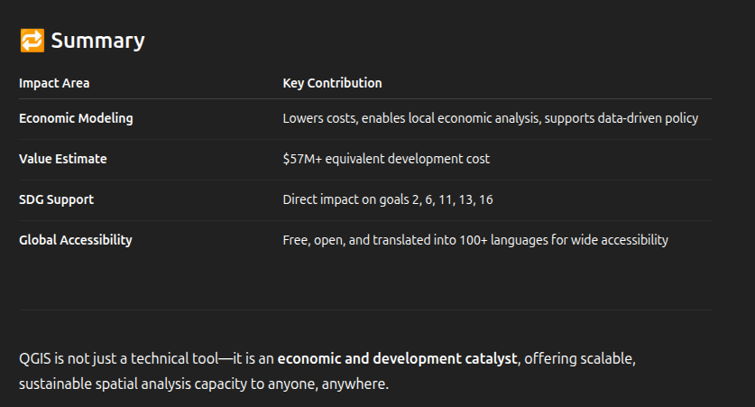
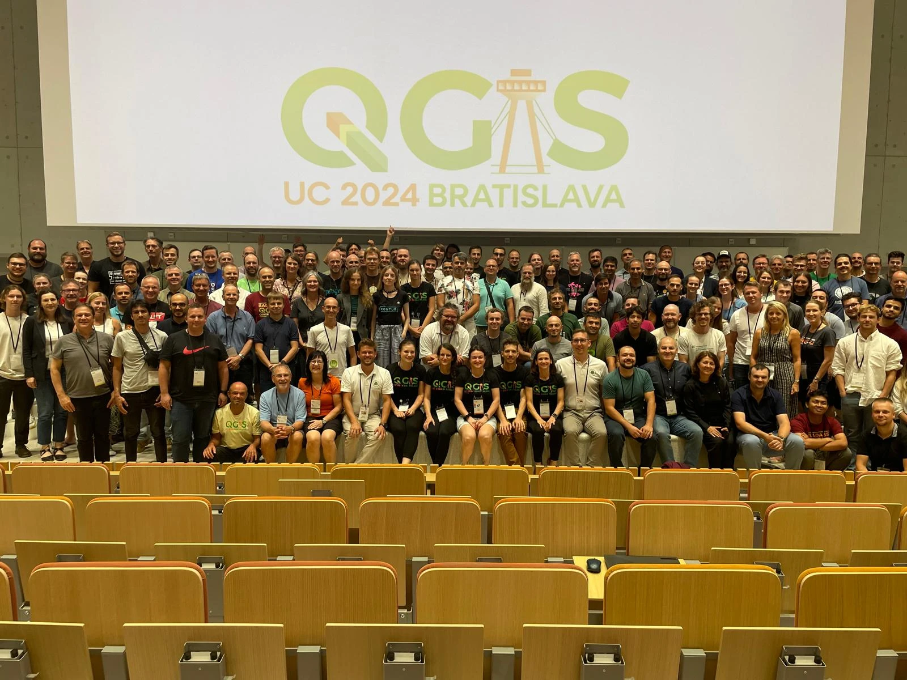

Tusen Tack!
QGIS at a Glance
- 🌍 Used by millions worldwide — across cities, forests, disaster zones, farms, …
- 💻 Runs on Linux, Windows, macOS — and Android, iOS via apps
- 🗣️ Available in 100+ languages thanks to our global community
- 🔁 Updated every 4 months with regular releases

QGIS is a Digital Public Good
- ✅ Officially recognized by the Digital Public Goods Alliance in 2025
- 🎯 Meets DPG standards: open-source, privacy-respecting, inclusive, and aligned with the UN Sustainable Development Goals (SDGs)
- 🌱 Supports global causes: climate action, urban planning, disaster response, public health
- 🧩 Strengthens QGIS’ role in international cooperation — especially with governments, NGOs, and educational institutions
- 🙌 Reinforces our commitment to building digital infrastructure that’s open, accessible, and ethical
Community First

Professional usage

How is QGIS sustained?

Who sustains?

Financial Growth & Transparency
But it’s not just about growth — it’s about how we use it.
- Bug fixing is our largest single allocation — this keeps QGIS stable and production-ready
- Infrastructure (build systems, servers, packaging) ensures we scale reliably
- Documentation gets a dedicated budget and full-time writer
- And then there’s the Grant Programme, supporting community-driven innovation
All of it is published publicly in our financial reports.
Grant Programme 2024–2025
- 💡 Direct investment in our community
- 🛠️ 2024 grants focused on usability, performance, and real user needs
- 🧱 Supports core foundations: not flashy, but essential
- 🚀 Adds innovation and responsiveness on top of ongoing work
- 🤝 Powered by the community — for the community
Qt6
Transitions to Qt6, the modern application framework that QGIS is built on.
- Security improvements
- Modern codebase with simplified maintenance
- Updated dependencies
QGIS 4.0
- QGIS 4.0 will be Qt6-only
- It won’t be an LTR, but will keep deprecated APIs to ease plugin transitions
- The LTR will follow in QGIS 4.2, scheduled for early 2026
The goal: make the transition as smooth and low-risk as possible
MacOS Package Improvements
- Builds now use vcpkg for better maintainability
- This allows us to finally support notarised builds — a requirement for modern macOS versions
- It’s already proven to work — Already done for QField
- First notarised builds of QGIS for macOS are expected for QGIS 4.0
This brings us closer to a seamless, professional user experience across all major platforms.
Harmonised QGIS Websites
We’ve also made huge progress on the QGIS web ecosystem.
Multiple QGIS sites have been updated to reflect a unified design and experience:
- hub.qgis.org
- plugins.qgis.org
- feed.qgis.org
- planet.qgis.org
- certification.qgis.org
- uc2025.qgis.org
This harmonisation means better UX, seamless transitions across platforms, and easier navigation for all users.
Huge thanks to Lova, who is here with us today, and to Tim, who sends his greetings and hopes to join next year.
Harmonised QGIS Websites

Documentation Websites
Next year
- user manual
- training materials
- developer docs (?)
Plugin Ecosystem Health
The plugin ecosystem in QGIS is thriving.
- The Plugin Repository now provides Qt6 compatibility info
- A migration guide for developers will be available
- Code migration tools are in the making
Plugin Ecosystem Health

QGIS Feed Strategy

QGIS Feed Strategy
Allows us to:
- Push out short-lived, high-value news
- Stay in sync with releases, updates, events
- Give you fresh content every few days
We’re aiming for frequent posts — with most having a validity of 10 days or less. It’s quick, timely, and always relevant.
Current Initiatives
- Circular Arcs: A crowdfunded initiative led by OPENGIS.ch to bring better support for circular geometries to QGIS
- Digital Twin Support: Lutra is pushing forward a crowdfunding campaign to improve digital twin functionality in QGIS
- Security Initiative: Led by Oslandia and OPENGIS.ch, focusing on hardening the platform and improving secure development practices
Tim’s 2024 Wishlist Revisited
Last year, Tim shared a wishlist:
- Dedicated team -> Looking into how to grow it
- Attribute table overhaul -> Planned for 2026
- Qt6 migration -> happening
- Cloud-native capabilities -> happening
- More UX improvements -> 🔮
Looking Ahead
So what’s next?
We’re not just thinking about patches and features — we’re thinking long-term strategy:
- A more cohesive documentation experience
- A language that can speak to big organisations decision makers
- Secure, modern packages for every platform
- Smarter build pipelines (trying to reduce energy consumption if possible)
- And a community that stays open, welcoming, and global
Spatial Without Compromise

Thousand Thanks
To everyone here today — thank you.
To every user, translator, developer, sponsor, documenter, tester, teacher — thank you.
To the QGIS PSC, sustaining members, donors — thank you.
